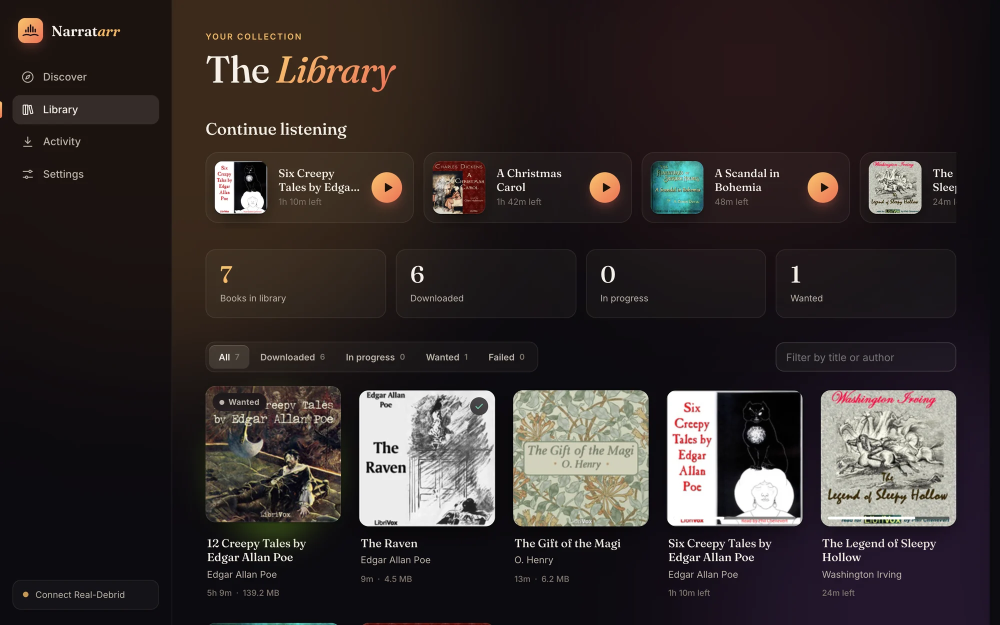
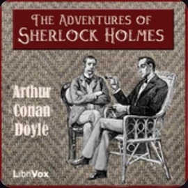
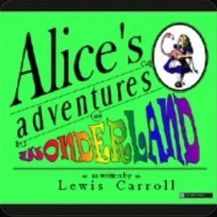
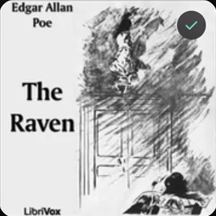
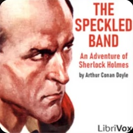
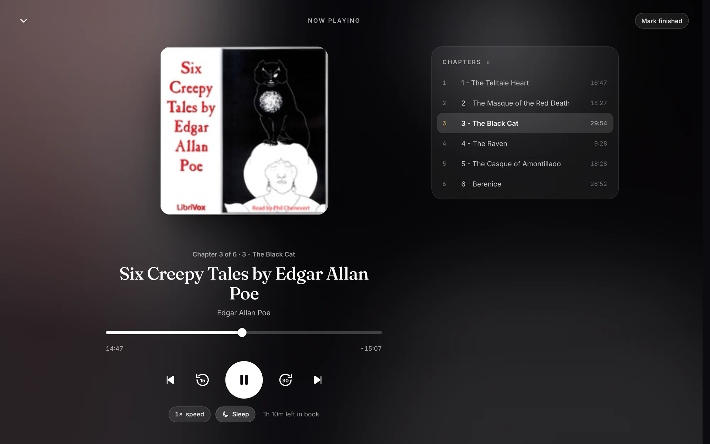
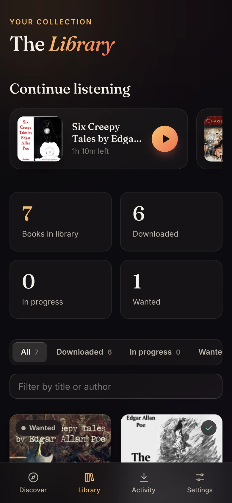

Requests that wait for you
A listener's request waits under Awaiting approval until an admin says yes. Nothing is searched for or downloaded before then.
The Time Machine · asked for by SamAWAITING
Treasure Island · approvedDOWNLOADING
Narratarr is an *arr-style audiobook manager with a player built in. Find a book, click once, and it lands in your library, tagged, organized and ready to play.
Docker, Unraid, macOS and Linux. Images for amd64 and arm64, Raspberry Pi 4 and 5 included.




Browse more than 30,000 free, legal audiobooks and radio shows from LibriVox and Old-Time Radio, by genre, popularity or what's new. Connect Prowlarr or any Torznab indexer, such as Jackett, and they're searched too.
sherlok holms and you still get Sherlock Holmes.
Plugs into the *arr stack you already run. Adding a new catalog is one small Python class.
Each release goes to the client you choose: a debrid service, a torrent client on your own machine, or a Usenet downloader. Routing rules pick the client by indexer, and by audiobook or ebook. Rules are checked top to bottom, the first match wins, and anything else goes to your default.
Finished books are named and moved into your folder layout, with the cover and description beside them. Pick a preset or write your own from {author}, {series}, {series_number}, {year}, {title} and {narrator}. When a book has no series, that part drops out along with the words around it.
No other app needed. Chapters, including the markers inside .m4b files. Speeds from 0.75× to 3×. A sleep timer that can stop at the end of a chapter. It remembers your place in every book, and lock-screen and headphone controls work too.


Admins run things. Listeners browse, ask for books and listen, and everyone keeps their own place in every book.
A listener's request waits under Awaiting approval until an admin says yes. Nothing is searched for or downloaded before then.
Word goes to ntfy, Gotify, Discord or any webhook when someone wants a book, and when downloads start, finish or fail. An event log in Settings shows where each one went.
Narratarr finds your server, on this machine, in Docker, on your network or at a public address. Sign in once, and it rescans after every download.
A star score from Audible's own average, shown only when the book matches exactly. A blank beats a wrong score. Switched off, it asks nobody.
Follow authors and series. New releases are added to Wanted and fetched when they turn up, in the languages you read.
Want any book as an audiobook, an ebook or both. The ebook lands beside its audiobook, so Audiobookshelf shows them as one book.
Other apps can search, request and follow a book's progress with their own tokens, so a phone client can ask Narratarr for books.
Your library stays on your machine. The fonts are bundled, so the app never calls a CDN, and the README lists every outside service Narratarr can contact, what it sends and when.
Every option ends the same way: Narratarr at http://localhost:8484, ready for its first book.
# asks a few friendly questions: Docker or native, where books go, start at login curl -fsSL https://raw.githubusercontent.com/narratarr/narratarr/main/install.sh | bash
Run the same command again to update. Add --docker --yes to skip the questions.
services: narratarr: image: ghcr.io/narratarr/narratarr:latest container_name: narratarr restart: unless-stopped ports: - "8484:8484" environment: - PUID=1000 # run `id -u` to find yours - PGID=1000 # run `id -g` to find yours - TZ=Etc/UTC volumes: - ./config:/config # settings + library database - ~/Audiobooks:/audiobooks # where finished books go
Then docker compose up -d. The container runs as your PUID and PGID, so the files it writes belong to you.
docker run -d --name narratarr --restart unless-stopped \ -p 8484:8484 \ -e PUID=$(id -u) -e PGID=$(id -g) \ -v "$PWD/config:/config" \ -v "$HOME/Audiobooks:/audiobooks" \ ghcr.io/narratarr/narratarr:latest
wget -O /boot/config/plugins/dockerMan/templates-user/my-Narratarr.xml \
https://raw.githubusercontent.com/narratarr/narratarr/main/unraid/narratarr.xmlThen in Docker choose Add Container and pick Narratarr from the template list. It runs as Unraid's usual nobody:users.
uv tool install git+https://github.com/narratarr/narratarr narratarr # → http://127.0.0.1:8484
Each guide lives on GitHub next to the code, so it always matches the version you run.
From the first page you see to pressing play on your first book.
Read the guide 02 · INSTALLThe guided installer and its options, Docker, Unraid and uv.
Read the guide 03 · CONNECTIndexers, debrid services, torrent clients, Usenet, and the paths they share.
Read the guide 04 · ROUTERules that pick a client per release, defaults per protocol, and testing a route.
Read the guide 05 · FILEPresets, every variable, and how missing parts drop out of a name.
Read the guide 06 · TIDYMove the books you already have into your layout, with a preview and undo.
Read the guide 07 · SHAREAdmins and listeners, approvals, and signing in from phones.
Read the guide 08 · LISTENReach it on your Wi-Fi, add it to your home screen, and keep it safe from the internet.
Read the guide 09 · RATEWhere the score comes from, how strictly books are matched, and what's cached.
Read the guide 10 · BUILDTokens, search, requests and status, for apps that ask Narratarr for books.
Read the guide 11 · UNDERSTANDSources, Wanted books, following authors and importing what you own.
Read the guide 12 · ASKThe questions people ask most, answered.
Read the guideGet help, share ideas and hear about new versions first on the Narratarr Discord. Bugs and pull requests are welcome on GitHub.